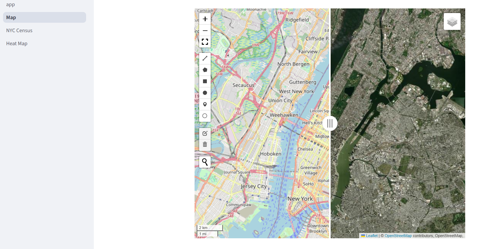
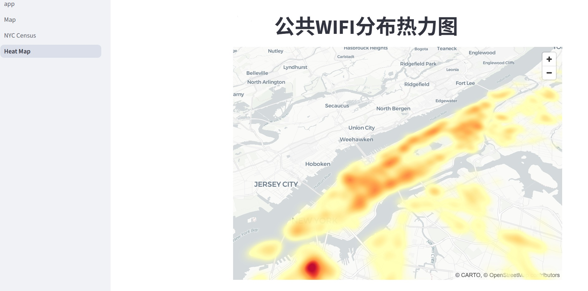

介绍Streamlit快速构建网页APP的方法
简介
StreamlitStreamlit 是一个开源的 Python 框架，用于快速构建和分享数据应用程序，尤其适合数据分析师和数据科学家等非前端开发人员。只需用几行 Python 代码就能将数据脚本变成交互式网页应用。它的特点是能够支持滑块、按钮和下拉框等组件，可以交互；能快速部署页面；与Pandas、matplotlib和OpenCV等库组合使用。
Streamlit说明文档
安装
Streamlit示例
1
2
3
4
5
6
7
8
9
10
11
12
13
14
|
import streamlit as st
import pandas as pd
st.title("我的第一个 Streamlit 应用")
name = st.text_input("请输入你的名字：")
st.write(f"你好，{name}！")
data = pd.DataFrame({
'列A': [1, 2, 3],
'列B': [4, 5, 6]
})
st.write("这是一个表格：")
st.dataframe(data)
|
运行方式
本地运行
运行成功之后，会提供url。
Local URL: http://localhost:8502
Network URL: http://192.168.1.196:850
停止运行:Ctrl+C
云部署
1.在Streamlit CloudStreamlit Cloud上免费生成APP
2.托管在Google Cloud或者AWS平台上
Streamlit基本语法
| 文本内容 |
| st.write(“Most objects”) # df, err, func, keras! |
| st.write([“st”, “is <”, 3]) |
| st.write_stream(my_generator) |
| st.write_stream(my_llm_stream) |
| st.text(“Fixed width text”) |
| st.markdown("Markdown") |
| st.latex(r""" e^{i\pi} + 1 = 0 “”") |
| st.title(“My title”) |
| st.header(“My header”) |
| 图表内容 |
| st.area_chart(df) |
| st.bar_chart(df) |
| st.bar_chart(df, horizontal=True) |
| st.line_chart(df) |
| st.map(df) |
| st.scatter_chart(df) |
| st.altair_chart(chart) |
| st.bokeh_chart(fig) |
参考文本Streamlit API
网页框架
Streamlit能构建网页的一些基本组成，例如：标题、网页头部、标签等。Streamlit相较于JS，它能够直接生成侧边栏，不用设置侧边与主内容的布局，只需一行代码便可分隔内容布局。而且在Streamlit构建的页面中能自由的改变侧栏宽度，也可以一键收起。
1
2
|
st.sidebar.title('Home')
st.sidebar.info('侧边栏内容')
|
通过对多个运行文件的布局构建，能实现多个功能在同一网站内实现。
文件结构
Main.py/
├── page1.py
├── page2.py
└── page3.py
实例
本案例APP以纽约市相关数据为例展示了一些Stremalit的可视化功能。


主页面
主页编码中包含基本简介及结构布局设置。
1
2
3
4
5
6
7
8
9
10
11
12
|
import streamlit as st
import pandas as pd
import numpy as np
#基本结构
st.title('About')
st.set_page_config(page_icon="📑")
#子页面关联
page1 = st.Page("pages/page1.py", title="页面1")
page2 = st.Page("pages/page2.py", title="页面2")
page3 = st.Page("pages/page3.py", title="页面3")
st.write("内容balabala~~~")
|
地图
Streamlit通过st.map()提供地图显示功能，当然也支持Leafmap和Pydeck等第三方GIS库显示地图。案例通过Leafmap库展示平面地图与影像地图的对比。
1
2
3
4
5
6
7
8
9
10
11
12
13
14
|
import folium
import leafmap.foliumap as leafmap
import streamlit as st
#页面设置
st.title("地图")
st.set_page_config(page_icon="🗺️")
#分割地图视图窗
m = leafmap.Map(height=800,center=[40.7639, -73.9794], zoom=12)
m.split_map(left_layer="OpenStreetMap", right_layer="Esri.WorldImagery")
#地图转化至Streamlit
m_streamlit = m.to_streamlit(800, 600)
|
图表展示
Streamlit支持多种不同的图表库，库中最基础的库是Matplotlib。以及一些交互式图表库。Streamlit原生的图表类型，例如st.line_chart和st.area_chart
1
2
3
4
5
6
7
8
9
10
11
12
13
14
15
16
17
18
19
20
21
22
23
24
25
26
27
28
29
30
31
32
33
34
35
36
37
38
39
40
41
42
43
44
45
46
47
|
import streamlit as st
import pandas as pd
import numpy as np
import plotly as pt
import plotly.graph_objects as go
st.title('人口概况')
st.set_page_config(page_icon="📊")
census_df = pd.read_csv('./pages/census.csv')
Borough = census_df['Borough']
Total_Pop = census_df['TotalPop']
fig1 = go.Figure([go.Bar(x=Borough, y=Total_Pop, marker_color='#A2BFE1')])
#fig.show()
Women =census_df['Women']
Men = census_df['Men']
fig2 = go.Figure(data=[
go.Bar(name='Women', x=Borough, y=Women, marker_color='#EB89B5'),
go.Bar(name='Men', x=Borough, y=Men, marker_color="#3764BE")
])
# 更改barmode为组合型
fig2.update_layout(barmode='group')
Hispanic = census_df['Hispanic']
White = census_df['White']
Black = census_df['Black']
Asian = census_df['Asian']
Native = census_df['Native']
fig3 = go.Figure(data=[
go.Bar(name='Hispanic', x=Borough, y=Hispanic),
go.Bar(name='White', x=Borough, y=White),
go.Bar(name='Black', x=Borough, y=Black),
go.Bar(name='Asian', x=Borough, y=Asian),
go.Bar(name='Native', x=Borough, y=Native)
])
fig3.update_layout(barmode='stack')
tab1, tab2, tab3 = st.tabs(["总人口", "性别数量","各种族人口数量"])
with tab1:
st.plotly_chart(fig1, theme="streamlit", use_container_width=True)
with tab2:
st.plotly_chart(fig2, theme="streamlit", use_container_width=True)
with tab3:
st.plotly_chart(fig3, theme="streamlit", use_container_width=True)
|
热力地图
很多情况下对地图展示的要求不仅限于BaseMap的显示，还包括点线面的矢量数据和栅格数据的数据分析结果展示。本次采用Pydeck库对矢量数据进行核密度分析生成热力图。
1
2
3
4
5
6
7
8
9
10
11
12
13
14
15
16
17
18
19
20
21
22
23
24
25
26
27
28
29
30
31
32
33
34
35
36
37
38
39
40
41
42
43
44
45
46
|
import pandas as pd
import pydeck as pdk
import streamlit as st
import numpy as np
#页面设置
st.set_page_config(page_title="Heat Map",page_icon="📍")
#内容简介
st.title(
"热力图"
)
#数据初始化部分
data = "./pages/hotspot-locations.csv"
df = pd.read_csv(data)
view = pdk.data_utils.compute_view(df[["Latitude", "Longitude"]])
view.zoom = 6
st.pydeck_chart(
pdk.Deck(
layers=pdk.Layer( #生成热力图
"HeatmapLayer",
data=df,
opacity=0.9,
radiusPixels=50,
get_position=["Longitude","Latitude"],
get_weight="Weight",
pickable=True,
),
initial_view_state=pdk.ViewState( #设置底图
longitude=-73.9794,
latitude=40.7639,
zoom=11,
min_zoom=5,
max_zoom=15,
pitch=40.5,
bearing=-27.36,
pickable=True,
),
map_style='light',
tooltip=True
)
)
|